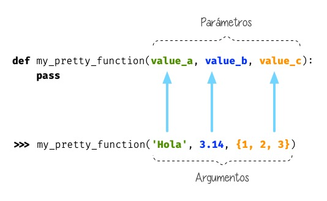

¿Qué es un argumento en Python?
Para definir que es un argumento tenemos que tener claro la diferencia entre argumentos y parámetros.
Los parámetros son los nombres que aparecen en la definición de una función. Los argumentos son los valores que le pasamos a la una función, o sea los que recibe.
Ejemplo:
Argumentos posicionales
Los argumentos posicionales son aquellos argumentos que se pasan en sus correspondientes parámetros en orden. Además de incluir el número correcto de argumentos, es importante el orden en el cual se indican los argumentos. Los argumentos necesitan ser escritos en el orden exacto, en el que se han declarado los parámetros en la definición de la función.
Ejemplo
Vamos a mostrar un ejemplo definiendo una función que construye un saludo a partir de dos parámetros:
def mi_saludo(nombre,edad):
print(f"Soy {nombre} y tengo{edad} años!")
Forma correcta de llamar a esta función:
mi_saludo('Sonia',48)
Si la función es llamada con un solo argumento, ocurrirá un error.
mi_saludo('Sonia')
Error
File «/Users/soniadelgadosierra/Documents/DevCamp/Python3/prueba.py», line 4, in <module> mi_saludo(“Sonia”) TypeError: mi_saludo() missing 1 required positional argument: “edad”
Si la función es llamada con tres ó más argumentos, ocurrirá un error.
mi_saludo('Sonia',48,'es')
Error
Traceback (most recent call last): File «/Users/soniadelgadosierra/Documents/DevCamp/Python3/prueba.py», line 4, in <module> mi_saludo(“Sonia”,48,”Delgado”) TypeError: mi_saludo() takes 2 positional arguments but 3 were given
Si a la función no se le pasa ningún argumento, ocurrirá un error.
mi_saludo()
Error
Traceback (most recent call last): File «/Users/soniadelgadosierra/Documents/DevCamp/Python3/prueba.py», line 4, in <module> mi_saludo() TypeError: mi_saludo() missing 2 required positional arguments: “nombre” and “edad”
Argumentos de palabras clave
Otro tipo de argumento además de los argumentos posicionales son los argumentos de palabras clave. En este caso, en vez de solo introducir valores en la llamada de la función, es posible especificar el nombre del parámetro y luego el valor que buscas asignarle. Además son más flexibles que los argumentos posicionales, ya que el orden de los argumentos no importa.
Ejemplo
En el ejemplo anterior:
def mi_saludo(nombre,edad):
print(f"Soy {nombre} y tengo{edad} años!")
Se podría llamar a la función de la siguiente manera:
mi_saludo(nombre='Sonia',edad=48)
Se puede usar tanto argumentos posicionales como de palabras clave, juntos al llamar una función.
Ejemplo
Siguiendo con el anterior ejemplo combinamos los dos tipos de argumentos:
mi_saludo('Sonia',edad=48)
Nota
Si utilizamos ambos argumentos primero siempre los posicionales y luego los de palabra clave
En este caso daría error:
mi_saludo(nombre='Sonia',48)
Error
Error
File «/Users/soniadelgadosierra/Documents/DevCamp/Python3/prueba.py», line 4 mi_saludo(nombre=”Sonia”,48) SyntaxError: positional argument follows keyword argument
Argumentos opcionales
Otro tipo de argumentos son los argumentos opcionales, es decir, los argumentos de la función también pueden tener valores predeterminados. Para que una función tenga un valor o valores predeterminados, tienes que asignarlo a un parámetro/s en la definición de la función. Esto se realiza mediante el uso de la estructura key=value, donde value será el valor predeterminado del parámetro.
Los argumentos predeterminados pueden ser combinados con argumentos no predeterminados en la llamada a la función.
Ejemplo
En este caso solo el lenguaje es un argumento opcional.
def mi_saludo(nombre,edad,lenguaje='es'):
print(f"Soy {nombre} tengo {edad} años y mi lenguaje por defecto es {lenguaje}!")
mi_saludo('Sonia', edad=48) #Soy Sonia tengo 48 años y mi lenguaje por defecto es es!
mi_saludo('Sonia', edad=48, lenguaje='en') #Soy Sonia tengo 48 años y mi lenguaje por defecto es en!